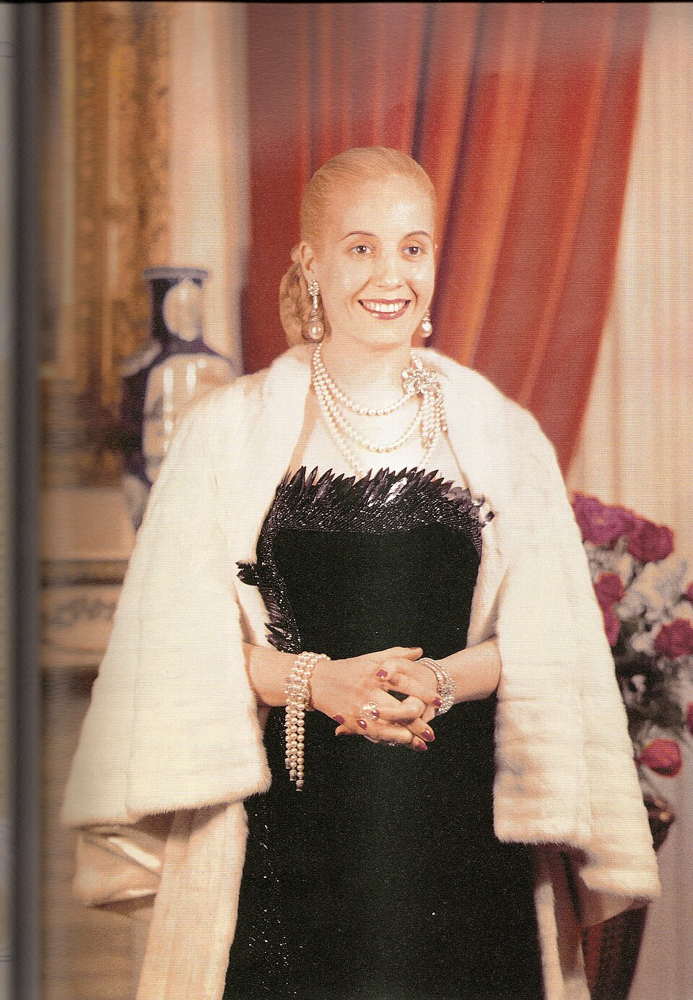

Eva Perón ha muerto y el país entero se detiene
A las 20.25 falleció la esposa del presidente de la Nación, a los 33 años, tras una larga enfermedad. La radio interrumpió sus programas para dar la noticia y la ciudad se apagó de golpe. Multitudes silenciosas comienzan a congregarse bajo la llovizna.

Poco después de las nueve de la noche, todas las radios del país interrumpieron sus programas y una voz grave leyó el comunicado que la Argentina temía desde hace meses: «Cumple la Subsecretaría de Informaciones el penosísimo deber de informar al pueblo de la República que a las 20.25 ha fallecido la señora Eva Perón, Jefa Espiritual de la Nación». La esposa del presidente tenía 33 años y llevaba largo tiempo enferma. En cuestión de minutos, Buenos Aires cambió de rostro: los cines y los teatros suspendieron sus funciones, los restaurantes cerraron sus puertas y un silencio extraño, apenas roto por el llanto, se adueñó de las calles mojadas.
El deceso ocurrió en la residencia presidencial, donde la acompañaban el general Perón, su madre doña Juana y sus hermanos, junto a los médicos que la asistieron hasta el final. El gobierno decretó duelo nacional y dispuso que los restos sean velados en el Ministerio de Trabajo y Previsión, el edificio desde donde la señora atendía a los humildes. Antes de la medianoche ya se formaban en los alrededores filas de más de un kilómetro, que crecen hora tras hora bajo una llovizna helada. Las floristerías de la capital agotaron sus existencias en pocas horas, y se dice que en el interior ocurre otro tanto: no queda una flor en la Argentina.
Había nacido en 1919 en Los Toldos, en un hogar humilde del campo bonaerense, y llegó a Buenos Aires siendo casi una niña para probar suerte como actriz. La radio le dio un nombre; el terremoto de San Juan, en 1944, le presentó al coronel Perón, con quien se casó al año siguiente. Desde la Fundación que lleva su nombre repartió hospitales, escuelas, juguetes y máquinas de coser, y se convirtió en la abanderada de los que ella llamaba sus descamisados. Este diario contó en 1947 la sanción del voto femenino, la bandera que ella agitó hasta verla ley; el año pasado, ya enferma, renunció a la candidatura a la vicepresidencia.
La noche ofrece estampas que cuesta escribir sin temblor. Frente a la residencia de la avenida del Libertador, mujeres de rodillas rezan el rosario sobre el pavimento húmedo; obreros que salían de sus turnos se acercan con el sombrero en la mano y no atinan a irse. Cuentan que en los barrios hay altares improvisados con su retrato entre velas. No todo el país llora, y sería faltar a la verdad ocultarlo: en otras casas la noticia se recibe en silencio, con la reserva de quienes la combatieron. Pero aun sus adversarios admiten esta noche que muere una mujer que nadie, en la Argentina de estos años, pudo ignorar.
Muere a una edad en que otras mujeres empiezan a vivir, y muere en la cima de una devoción y de un encono que pocas figuras conocieron en este país. El diario no pretende zanjar esta noche lo que los argentinos discutirán largamente; registra lo que ve: un pueblo enorme de pie bajo la lluvia, un país partido entre el llanto y el silencio, y un dolor que no parece fabricado, porque nadie hace una fila de un kilómetro por obligación bajo la llovizna de julio. Desde las 20.25 de hoy, la Argentina es un país distinto, y todavía no sabe cuánto.